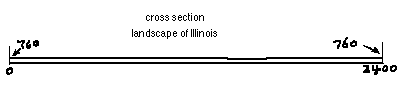
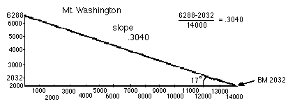

Alex finds the slopes of
wheel-chair ramp, IL,
& Mt. Washington/chapter 14
The problems below were originally done by hand
by Alex, a 6th grader. These figures were computer-enhanced, mainly for readability
purposes.
One
of my calculus students was talking about the downward slope of her
driveway into their garage, which made it very difficult to maneuver in
the winter time. I brought up the pitch of a roof (really 1/2 the
slope), the gradient of a road (given in %), the pitch of a screw, etc.

The following were done from a topographic map.

You can see that he found, not surprisingly, that east-central Illinois is
quite flat and the slope is 0/2400 = 0. There are other nearby spots not as flat as the part he
chose. You could do this near your house or school.
Using a topographic map of
New
Hampshire
, he also found the slope of
Mt.
Washington
. He found the
elevation or height of the mountain from the map, measured to the approximate
base of the mountain. He made a scale drawing, and found the slope to be 0.304 .
The slope turns out to be the tangent of the angle of elevation. Using his Dad's
calculator -- he used tan-1 0.304, the angle whose tangent is 0.304 or
the inverse tangent of 0.304 (make sure you are in degree mode). He found the
angle of elevation to be about 17' (Ian's
legs think this is too low!).
